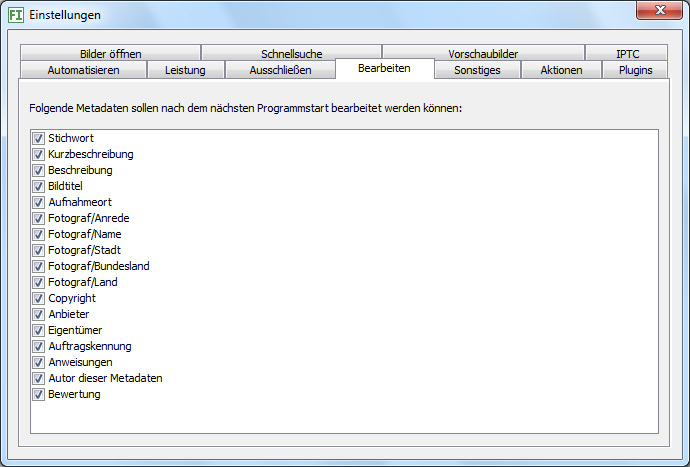

Hier wählen Sie alle Metadaten aus, die Sie bearbeiten und abspeichern lassen möchten. Beim nächsten Programmstart werden Ihnen nur noch diese angeboten.
Sind Sie beispielsweise nicht daran interessiert, Ihren Bildern eine Auftragskennung zuzuweisen, entfernen Sie das Häkchen davor. Zukünftig können Sie schneller eingeben, da dieses Feld nicht mehr angesprungen wird. Zusätzlich können Sie schneller zugreifen auf die beiden Kartenreiter Bearbeiten und Vorlagen am Ende der Metadaten-Eingabefelder.
